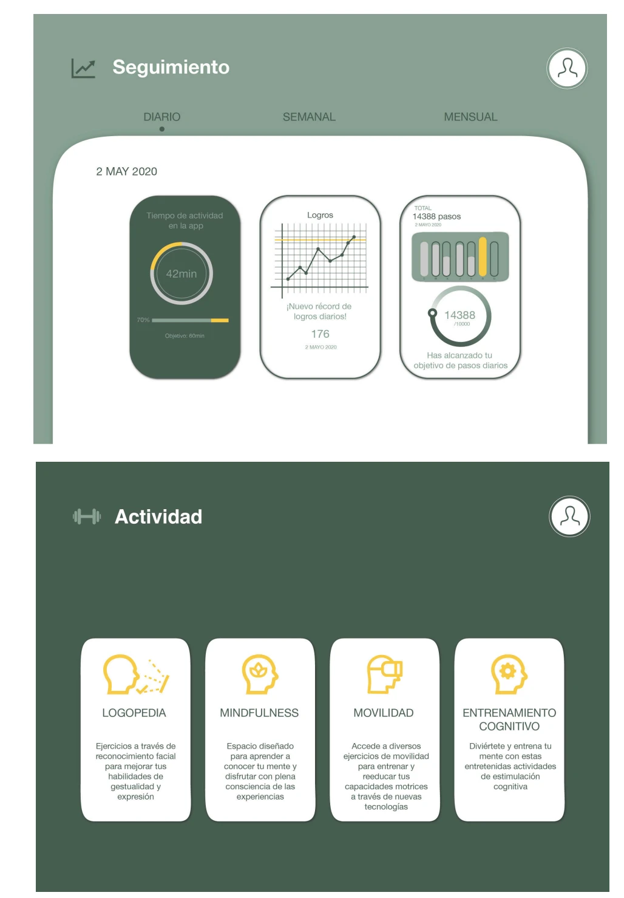
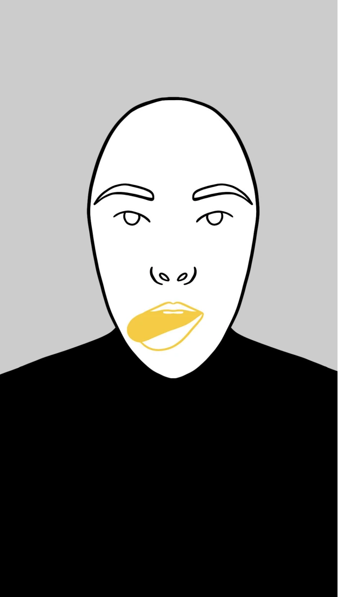
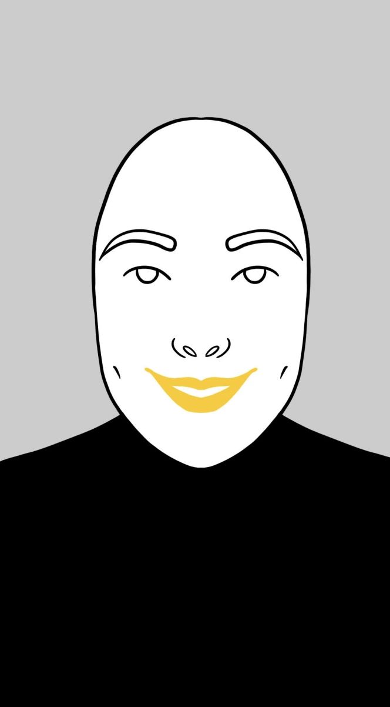
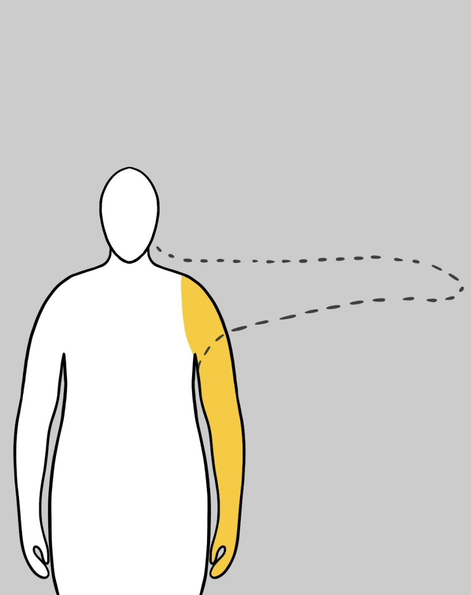

SISDEVA: sistema digital de evaluación y asistencia
Sistema diseñado para mejorar la comunicación entre personal sanitario y paciente, apoyándose en la realidad virtual para explicar procedimientos complejos de forma comprensible.
Rol
Estudiante
Cliente
Sistema Canario de Salud
Año
2021
Equipo
Yerimay Betancourt, Javier Díaz, Paula Jubera y Ana Ramos


Cuál fue la necesidad que determinó este proyecto
Contexto
Los pacientes de Parkinson reciben una valoración de la evolución de su enfermedad de una forma discontinua, solo cuando se desplazan a la consulta médica. Además, estas consultas presenciales pueden verse limitadas por cuestiones de espacio y tiempo. Sin embargo, es la única manera que disponen de recibir sus tratamientos de rehabilitación.
01
Información difícil de comprender
El lenguaje clínico dejaba al paciente sin una imagen clara de lo que iba a ocurrir.
02
Ansiedad ante el procedimiento
La incertidumbre sobre el proceso generaba miedo y peor adherencia al tratamiento.
03
Tiempo limitado en consulta
El personal sanitario no disponía de tiempo suficiente para explicarlo todo en detalle.
Inicios del proyecto
Enfoque
El proyecto surge a partir de las inquietudes compartidas por los cuatro integrantes del grupo de trabajo sobre el aspecto social del diseño. Lejos de comprender nuestra disciplina como un ámbito meramente artístico, confiamos en la capacidad del diseño para integrarse en un contexto multidisciplinar gracias a su enorme versatilidad. De este modo, pretendemos aprovechar el diseño para que actúe como ese engranaje capaz de poner en común los intereses de los agentes implicados en una determinada actividad, logrando que cada uno alcance sus objetivos individuales.
Objetivos
El principal objetivo fue aprovechar las herramientas de diseño y nuevas tecnologías para realizar propuestas de mejora en prestaciones concretas del ámbito sanitario.
01
Plataforma de comunicación interactiva
Proponer una plataforma de comunicación interactiva que ofrezca autonomía al paciente al poder acceder a los tratamientos desde su domicilio.
02
Evaluación, tratamiento y seguimiento
Aprovechar dicha plataforma para facilitar la evaluación, tratamiento y seguimiento de las enfermedades por parte de los sanitarios.
03
Tratamientos interactivos con realidad virtual
Implementar nuevos tratamientos interactivos que combinan el uso de diseño gráfico y aplicaciones tecnológicas relacionadas con la realidad virtual como terapias de rehabilitación.
04
Motivación del paciente
Incidir en el grado de motivación de los pacientes al poder ser conocedores de su propia evolución mediante sistemas de seguimiento.
Análisis y benchmark
Investigación primaria
Una vez definido el problema de estudio, nos adentramos en el análisis de investigaciones, antecedentes y publicaciones que se relacionan con el tema que nos ocupa para definir correctamente la dirección que toma el proyecto y estudiar las posibles líneas de investigación.
Diseño y ciencia
La tecnología y el diseño, bien por separado o en conjunto, son capaces de ofrecer servicios o recursos que faciliten la labor y estancia de profesionales y pacientes, y aseguren una comunicación clara y efectiva. Esto nos muestra la gran variedad de posibles intervenciones que, como diseñadores, debemos tener en cuenta a la hora de desarrollar nuestro proyecto.
01
Neurofit (2019)
Creada por la Fundación Curemos el Parkinson y UCB junto a Nerea Foncea. Cuenta con ejercicios de rehabilitación y consejos sobre cómo adaptar el hogar.
02
Apparkinson
Desarrollada a través del Programa Innova Social. Envía alertas de medicación, ejercicios prácticos, fisioterapia, logopedia o terapia ocupacional.
03
Párkinson contigo
Información sobre la enfermedad y sus tratamientos, con apartados para controlar la medicación.
04
HOOP
Plataforma compuesta de una aplicación móvil y sensores inerciales para el paciente, y una web de rehabilitación, comunicación y seguimiento que ayuda al terapeuta.
¿Qué podemos hacer?
Algunas de las ideas que surgen como fruto de esta unión son el diseño de herramientas digitales que fomenten la autonomía del paciente a través de la implementación de tratamientos a distancia, o el diseño de innovaciones terapéuticas que resulten estimulantes para el paciente por el uso de nuevas tecnologías.
Conceptualización y planificación
Análisis de conceptos
Cada uno de los integrantes del grupo elaboró un mapa conceptual individual, con aquellas palabras que encontraba más familiares con el Párkinson. Una vez puestas en común, elaboramos grupalmente un mapa conceptual mucho más completo al contar con los enfoques individuales de todos los participantes, que se divide según los conjuntos que consideramos de mayor relevancia.


Tabla de palabras clave y mapas conceptuales elaborados a partir del análisis grupal.
Planteamiento del proyecto gráfico
Llegar a las respuestas de estas preguntas conlleva el desarrollo de un proceso de resolución creativa de problemas. En nuestro caso, recurrimos al proceso del doble diamante, el cual nos ayuda a centrarnos en identificar correctamente el problema antes de comenzar a idear soluciones efectivas.

La búsqueda del nombre perfecto
Enfoque
El naming es ahora mismo uno de los elementos clave dentro de la promoción y la venta de productos y/o servicios. Es un pilar fundamental dentro de las marcas, siendo capaz de definir el área que ocupa o el público al que se dirige. Es por ello por lo que el proceso de elección de naming implicó la consideración de varias y muy diversas opciones.
Propuestas
-
01
Neuring
Totalmente relacionado con la neurología, es el campo fundamental donde es tratada la enfermedad de Parkinson. Al fin y al cabo esta patología es neurodegenerativa, es decir, va dañando y eliminando de manera progresiva muchas de las neuronas que nos permiten realizar nuestros movimientos cotidianos. En este caso este tipo de naming se clasifica como evocativo, es decir, mediante una raíz ya existente (neur-), añadimos el -ing, como en inglés, para referirnos a la acción de "neuronar", es decir, estimulación neuronal.
-
02
Yellow
Del inglés "amarillo", va más allá de un simple naming. El color amarillo es de los más alegres que podemos encontrar dentro de las gamas cromáticas que nos presenta la propia naturaleza. Felicidad, alegría, optimismo y estimulación son algunos de los términos que más se le asocian a esta tonalidad. A simple vista no se relaciona para nada con la filosofía del proyecto, pero sí está totalmente vinculado a la historia de este color dentro de ámbitos como la psicología, la neurología o la psiquiatría. Estudios le otorgan la capacidad de ejercer como neuroestimulador, algo que tuvimos muy en cuenta a la hora de desarrollar el proyecto, y por ello lo empleamos en nuestras terapias hasta llegar a ser el color corporativo de la marca. Todo este trasfondo nos llevó a plantearlo como propio naming. Sin embargo, la opción quedó descartada por la cantidad de contenido del sector del mercado al que se dirige nuestro producto que usa este color como nombre. Con el objetivo de destacar como producto, y no crear confusión, decidimos buscar una propuesta más única.
-
03
SISDEVA
Se trata de un naming compuesto por un acrónimo, a partir de Sistema (SIS-) Digital (-D-) de Evaluación (-EV-) y Asistencia (-A). Tratamos de generar un naming utilizando términos descriptivos de nuestra actividad e intervención dentro del área sanitaria a la que nos estamos dirigiendo. Para esta propuesta resultó fundamental tener en cuenta la facilidad de pronunciación del término, ya que, en ocasiones, los acrónimos pueden dar lugar a palabras difíciles de pronunciar o recordar.

Diversas propuestas de naming
Primeros materiales gráficos y mockups
Enfoque
Como descubrimos en la investigación, el color amarillo es un claro estimulador neuronal que fomenta la neurotransmisión, es decir, el proceso de enviar la información del cerebro a las diferentes partes de nuestro cuerpo para que realicen una determinada acción. Consideramos por lo tanto que este color debía ocupar un lugar protagonista dentro de los códigos visuales del proyecto, algo que puede diferenciar a la identidad del resto de marcas cercanas o relacionadas con el sector.

Ilustraciones para el tratamiento orofacial
Terapias digitales
Entre varios de nuestros objetivos, se encuentra fomentar el entrenamiento autónomo en los pacientes. Es por ello que se han desarrollado una serie de ejercicios a modo de terapias digitales que estimulan ciertos movimientos faciales y corporales que irán incorporados en uno de los apartados de la app. Para su correcta realización, se han llevado a cabo una serie de pasos. Además, dentro de terapias digitales, destaca que se plantearon entonces dos modalidades para la UX del producto:
- Uso del software en el propio dispositivo móvil / tablet
- Uso de gafas de RV para realizar actividades que se complementaran con esta modalidad
-
01
Bocetos
Es necesario realizar diferentes bocetos para crear un tipo de ilustración adecuada al proyecto. En este caso se ha decidido optar por un tipo de dibujo sencillo a línea, simplificando los rasgos de la cara del personaje en los ejercicios faciales para mantener sólo lo esencial y eliminando el rostro en los ejercicios corporales para centrar la atención en las partes que más la requieren.
-
02
Elección de colores
Para poder crear una unificación entre todos los ejercicios se ha optado por color blanco, negro, gris y amarillo. La dinámica que se ha seguido es delinear con línea negra, colorear los fondos de gris, el cuerpo o cara en color blanco y destacar la parte del cuerpo que se quiere ejercitar de color amarillo para centrar la atención. Además, se ha tomado como referencia un filtro de la aplicación TikTok de China que consiste en imitar ciertos movimientos que están delimitados por una línea continua o discontinua y se iluminan con una línea verde si es correcto. Hemos aplicado esta dinámica añadiendo también un check en verde para que sepan que es correcto.
-
03
Creación de los gifs
Para el proceso de realización de los gifs, se han grabado en un video algunos de los movimientos que queríamos representar en las terapias. Cada uno de ellos se ha introducido en Photoshop para exportar una secuencia de imágenes con pocos frames por segundo para posteriormente realizar una rotoscopia de cada uno de estos movimientos en la aplicación Procreate del iPad. Tras dibujar una media de 13 dibujos por ejercicio, se exporta de nuevo a Photoshop para crear la animación.
Estructurando el acceso y la navegación de la app

Acceso y registro
La estructura de uso de la aplicación parte de la pantalla de acceso. Dado que se trata de una aplicación destinada al uso con fines sanitarios, el registro en la misma vendrá recomendado y controlado por parte de un profesional. Por ello, para iniciar la sesión, el usuario deberá introducir su DNI y un código que el personal sanitario que siga su tratamiento le habrá facilitado previamente. De este modo la aplicación quedaría conectada automáticamente al historial médico de los pacientes, facilitando así la actualización continua de los datos.

Experiencia post-registro
De la definición de perfil de usuario estándar de nuestra aplicación alcanzada gracias a la herramienta buyer persona, extraemos una serie de conclusiones que resultan fundamentales para crear la estructura base de la aplicación. La media de edad de las personas que recurrirían a nuestra aplicación viene dada por la media de edad de las personas que padecen EP, esto es, 60 años. Este dato resulta vital en este punto del proceso, pues, al no tratarse de una aplicación destinada a jóvenes, nos hace tener en cuenta términos de accesibilidad respecto al tamaño de las imágenes y textos, o a la dificultad que pueda suponer aprender a usarla con fluidez. Además, al tratarse de enfermedades degenerativas y, desgraciadamente, aún sin cura, debemos ser muy conscientes de que la aplicación deberá poder ser usada diariamente durante un largo periodo de tiempo sin resultar aburrida o transmitir una sensación de desagrado, es decir, debe ser "amable" tanto en funcionamiento como en apariencia con el usuario para fomentar un uso continuado de la misma.


Wireframes de alta fidelidad
Emoción y motivación
El usuario debe sentir principalmente satisfacción y entretenimiento al usar la aplicación. Sería conveniente también que se sintiera en cierto modo retado (desde un punto de vista positivo) para que se involucre plena y conscientemente en el desafío de mejorar y evolucionar, aumentando su implicación y motivación con los tratamientos. Como hemos visto anteriormente, la aplicación debe incidir en los tres niveles emocionales del usuario: visceral (siendo agradable y atractiva a la vista), conductual (haciendo sentir satisfecho e independiente al usuario) y reflexiva (haciéndole llegar a la conclusión de que la aplicación tiene consecuencias positivas no sólo en su enfermedad sino en su vida).

Estilos terapéuticos
Cada ejercicio se representa con una ilustración en primer plano de la zona del cuerpo que se está trabajando, siempre sobre el mismo fondo gris corporativo y con el mismo lenguaje visual: contorno en línea negra, relleno en blanco y silueta en negro. La parte concreta que se busca estimular se resalta en amarillo corporativo, y en los ejercicios de movilidad una línea discontinua delimita además el recorrido del movimiento que el paciente debe realizar.

Ejercicio para la disfagia
Los pacientes con enfermedad de Parkinson en ocasiones experimentan problemas a la hora de tragar, por ello se estimularán los músculos que facilitan la deglución y masticación.

Ejercicio para la facies amímica
Los pacientes con enfermedad de Parkinson en ocasiones experimentan una pérdida de expresión facial y del lenguaje gestual, por ello se estimularán los músculos faciales.

Ejercicio de movilidad corporal
Los pacientes con enfermedad de Parkinson en ocasiones experimentan rigidez al realizar ciertos movimientos. Con este ejercicio conseguimos que el paciente estimule ciertas partes del cuerpo, tratando de realizar una elevación de los brazos hasta formar un ángulo de 90º para estimular el movimiento y rehabilitar la zona.
Diseñando la experiencia dentro de las gafas de RV

Enfoque
En la pantalla se muestra una sencilla figura humana ilustrada que imita el movimiento que realiza el usuario. La parte específica del cuerpo que se trata de estimular viene destacada en color amarillo. De este modo, el usuario se ve a sí mismo en movimiento (gracias a la información recogida con el sensor externo) dentro de un espacio de 360º. Alrededor de esta figura se muestra una línea discontinua la cual indica la posición final del movimiento que debe realizar. El sensor es capaz de recoger parámetros como la velocidad de los movimientos, la aceleración, o grados de inclinación, por lo que el usuario podrá ir viendo en su pantalla su evolución con respecto a los diferentes datos que se registran.
Para optimizar la experiencia, se diseñan los entornos en los que se encuentra virtualmente el usuario, para ubicarlo en espacios que, gracias a las investigaciones realizadas, sabemos que pueden tener efectos beneficiosos para su salud como por ejemplo, la naturaleza.


Una ayuda para nuestros profesionales y pacientes


Punto final
El desarrollo de este proyecto nos ayuda a encontrar aplicación a los diferentes conocimientos y habilidades adquiridas a lo largo del grado. Tratándose de un proyecto que abarca diversas ramas del campo del diseño, nos ha servido para conocer diferentes modos de actuación y comprender la repercusión que llega a tener el proceso de investigación. Nos ha hecho conscientes de la importancia del flujo de trabajo tanto individual como en grupo, acentuando la relevancia de valores como la cooperación, el trabajo en equipo, y el compromiso.
El proyecto que se presenta, aporta la visión del asunto y avanza un prototipo de solución desde el punto de vista del diseño social. Esta idea para materializarse de una forma eficaz, precisará los aportes de expertos multidisciplinares, tanto en el ámbito sanitario como tecnológico. Esta convergencia de conocimientos de diferentes disciplinas especializadas, haría viable el producto pudiendo llegar a tener resultados visibles en una hipotética aplicación.
Funcionalidades
entregadas
-
01
Experiencia inmersiva guiada
A través de las gafas de realidad virtual, el paciente recorre el procedimiento paso a paso en primera persona, visualizando cada etapa antes de vivirla en la consulta real. Esta experiencia guiada reduce la incertidumbre y ayuda a que la persona llegue a la cita con una idea clara de lo que va a suceder.
-
02
Lenguaje visual accesible
Sustituimos el vocabulario clínico, a menudo complejo para el paciente, por ilustraciones sencillas y códigos visuales claros, como el uso del color amarillo para señalar la parte del cuerpo implicada en cada ejercicio. De este modo, la información se vuelve comprensible independientemente de los conocimientos médicos previos del usuario.
-
03
Apoyo al profesional sanitario
La herramienta funciona como apoyo durante la consulta, permitiendo al profesional sanitario reforzar sus explicaciones con contenido visual sin necesidad de alargar el tiempo de la cita. De esta forma, el paciente sale con una comprensión más completa del procedimiento sin que ello suponga una carga adicional para el equipo médico.


Qué me dejó este proyecto
SISDEVA me dejó un compromiso claro con el diseño social: entender que el diseño puede ser una herramienta real de ayuda en el sector sanitario, y no solo un ejercicio estético. Trabajar en un contexto tan sensible como la salud me obligó a diseñar con cuidado, pensando siempre en las personas que estarían al otro lado, y me hizo valorar la tecnología inmersiva no como un fin en sí misma, sino como un medio al servicio de quien la usa. Por encima de todo, este proyecto reforzó mi visión del diseñador como un perfil multidisciplinar, capaz de dialogar con profesionales de otros campos para que una idea llegue a convertirse en una solución viable.
Has llegado al final
¿Quieres ver más proyectos?